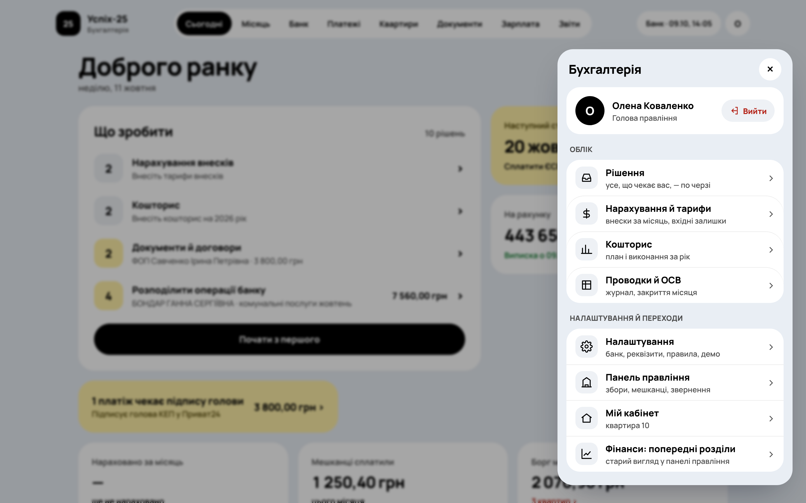
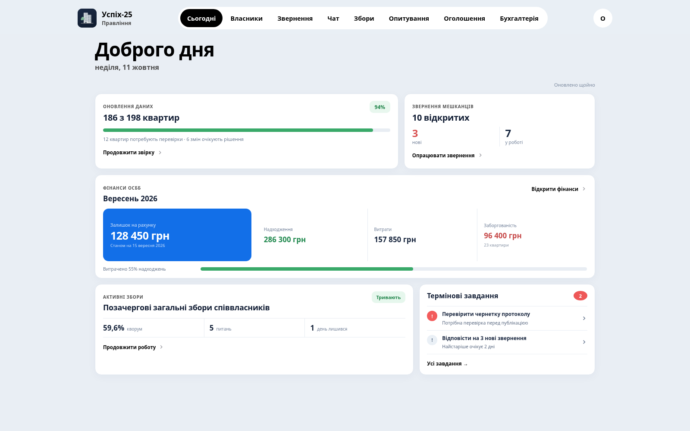

Квартира й оплата внесків
Баланс, історія нарахувань і платежів, квитанції та опубліковані витрати будинку. Для оплати є банківські посилання й QR-код НБУ; довідка про заборгованість формується у PDF.
Система управління й обліку ОСББ із трьома кабінетами: мешканця, правління та бухгалтера. Від нарахувань і банківської звірки до зарплати, проводок, закриття місяця та XML-звітності ДПС. Збори, документи, лічильники й звернення залишаються в одному застосунку.
ОСББ потрібно пов’язати внески мешканців, банківські операції, рахунки постачальників, зарплату й звітність. Коли вони живуть у різних таблицях і чатах, складно пояснити борг квартири, перевірити оплату документа або узгодити залишки перед закриттям місяця.
«Успіх-25» об’єднує ці процеси у трьох окремих кабінетах. Мешканець бачить свою квартиру й дані будинку; правління працює зі зборами та зверненнями; бухгалтер проходить місячний цикл у спеціальному інтерфейсі з чергою завдань. Права голови, члена правління й бухгалтера розділені.
Фінансові зміни виконуються через серверні операції з перевіркою ролей. Нарахування, рознесення банку й проводки мають захист від повторного виконання та журнал дій. Дані квартири відокремлені правилами Firestore/Storage, а банківський токен зберігається лише на сервері.
Баланс, історія нарахувань і платежів, квитанції та опубліковані витрати будинку. Для оплати є банківські посилання й QR-код НБУ; довідка про заборгованість формується у PDF.
Екран «Сьогодні» збирає завдання й нагадування. Розділ «Місяць» веде через нарахування, банк, документи, зарплату, перевірки й закриття; таблиці на комп’ютері доповнюються картками на телефоні.
ПриватБанк Autoclient синхронізує виписки щогодини. Надходження зіставляються з квартирами за реквізитами й призначенням; неоднозначні операції потрапляють у чергу рішень. Підтримуються кілька рахунків, повернення та повторне завантаження без дублікатів.
Платіж постачальнику або працівнику готується на сервері й передається до Приват24 для бізнесу. Голова підписує його КЕП у банку; застосунок підтверджує списання за випискою, а не лише за фактом створення доручення.
Рахунки, акти, договори та вкладення зв’язуються з оплатою й банківською операцією. Акт не подвоює витрату рахунку. Кошторис показує план і факт; мешканці отримують опублікований звіт із розшифровкою статей.
Працівники та виконавці за ЦПД, табель, аванс і остаточна виплата, ПДФО, військовий збір та ЄСВ. Розрахунки враховують відпустки й лікарняні; виплати зв’язуються з банком, а дані переходять у звітність.
Подвійний запис, оборотно-сальдова відомість і аналітика квартир та банківських рахунків. Грошові розрахунки виконуються в цілих копійках. Закриття блокується за розбіжностей; повторно відкрити період може лише голова із зазначенням причини.
Розрахунок J0500111 із додатками Д1, 4ДФ і Д5 за потреби, CSV та версійований XML-архів. Квитанції № 1 і № 2 зберігаються зі статусами. Завантаження, підпис і подача виконуються вручну в Електронному кабінеті ДПС.
Місячні внески за площею та числом мешканців, історія тарифів і початкові залишки. Квартирні та будинкові лічильники підтримують воду, тепло й електроенергію; інформаційний розподіл тепла показується окремо від облікового балансу.
За статутом рішення рахуються за кількістю співвласників, а не площею. Паперові голоси вносяться по кожному співвласнику без повторного обліку людини з кількома квартирами; електронний голос поки фіксується за квартирою. Завершення й публікація PDF-протоколу — серверні операції.
Звернення з фото та статусами, чат, оголошення й спільні документи. Android + MacroDroid передає стан електропостачання, а сервер отримує графіки ДТЕК. Реєстр співвласників експортується власним генератором .xlsx у браузері.
PWA встановлюється на телефон. Service Worker кешує оболонку мешканця, а інші кабінети — після першого відкриття; фінансові операції потребують мережі. FCM надсилає сповіщення про завдання й платежі на підпис після дозволу користувача.
Наступні етапи: касові ордери й касова книга, основні засоби та амортизація, імпорт банківської виписки з файлу й автоматична подача звітності. Електронний підпис голосу конкретного співвласника також залишається в плані.
Клієнт написаний на ES-модулях без UI-фреймворку. esbuild збирає три точки входу, спільні та відкладені модулі — у файли з хешами в назвах; GitHub Pages публікує каталог _site. Firebase забезпечує автентифікацію, Firestore, файли й серверну логіку. Cloud Functions і правила доступу розгортаються окремим workflow.
У репозиторії — 54 тестові файли: 20 клієнтських unit, 18 серверних і 16 інтеграційних для правил та серверних операцій. Перевіряються розрахунки, повторні запити, права доступу й повний місячний цикл на Firebase Emulator. Банківські та податкові інтеграції в робочому середовищі потребують окремої перевірки.
index.html кабінет мешканця admin.html кабінет правління buh.html кабінет бухгалтера js/ 87 авторських клієнтських модулів buh-*.js місячний цикл, банк, зарплата, звітність staff-core.js ролі й права співробітників nbu-qr.js платіжний QR-код meeting.js підрахунок за співвласниками functions/ 29 серверних модулів, 16 експортованих функцій bank*.js виписки, зіставлення й звірка payments*.js платежі та повернення payroll*.js зарплата й податки journal*.js проводки й закриття періоду reports*.js звітні пакети й квитанції ДПС firestore.rules доступ до даних за роллю storage.rules доступ до файлів scripts/ перевірка проєкту й збірка esbuild tests/ unit-тести й перевірки Firebase Emulator .github/workflows/ перевірки, Pages і Firebase deployment
Натисніть на зображення, щоб відкрити його на весь екран. Стрілки ← → гортають галерею.


